← Índice de los 69 tutes de IDA
Tute 65 · Desafío Ekoparty 2018 (1)
se conecta con: Fuera de alcance
INTRODUCCIÓN AL REVERSING CON IDA PRO DESDE CERO PARTE 65.
TUTE DEL DESAFIO DE NICO PARA LA EKOPARTY 2018 -PARTE 1
Vamos a reversear paso a paso el desafío de Nico para la Ekoparty 2018, es un server compilado en 64 bits nativo y corre en Windows por supuesto.
Para comenzar lo veré en un Windows 7, de cualquier forma, la parte del reversing estático será similar.
Al correrlo vemos lo siguiente
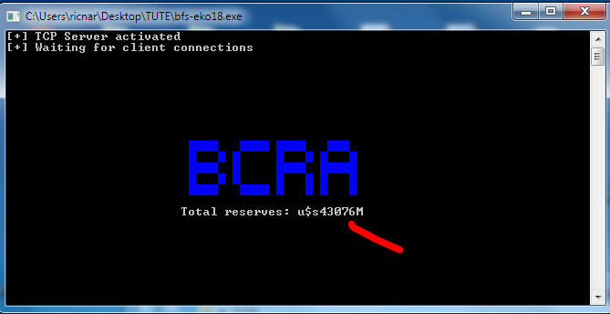
Las bases están aquí
https://labs.bluefrostsecurity.de/blog/2018/09/11/bfs-ekoparty-2018-exploitation-challenge/
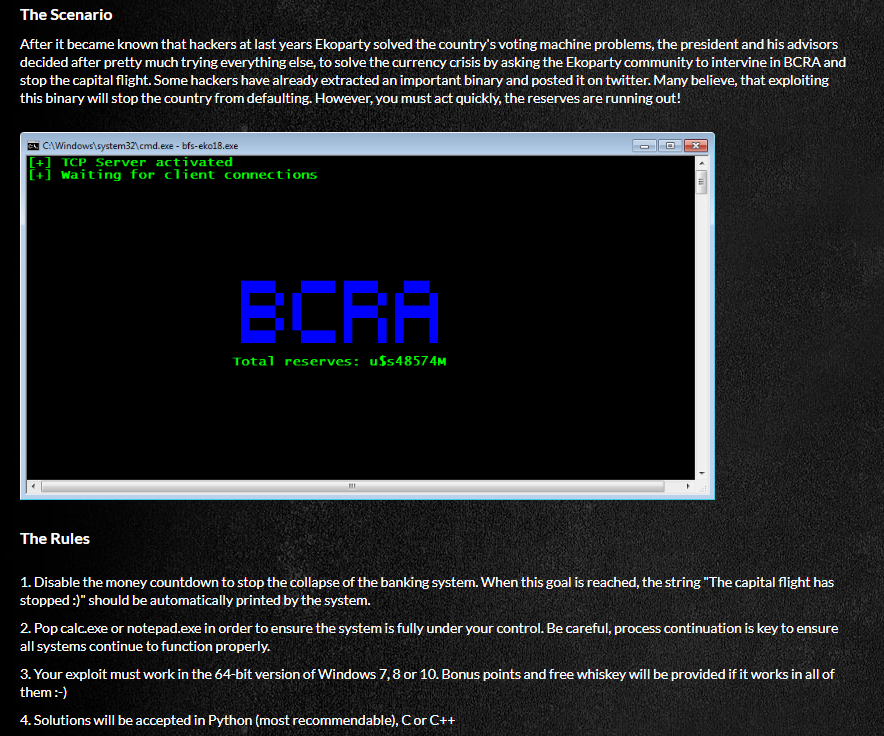
Las reservas van decreciendo y hay que parar eso, luego como segundo objetivo, se debe ejecutar una calculadora, abramos el ejecutable en IDA64, así lo analizamos.
En la ventana de las strings, buscamos Total reserves y hay dos resultados.
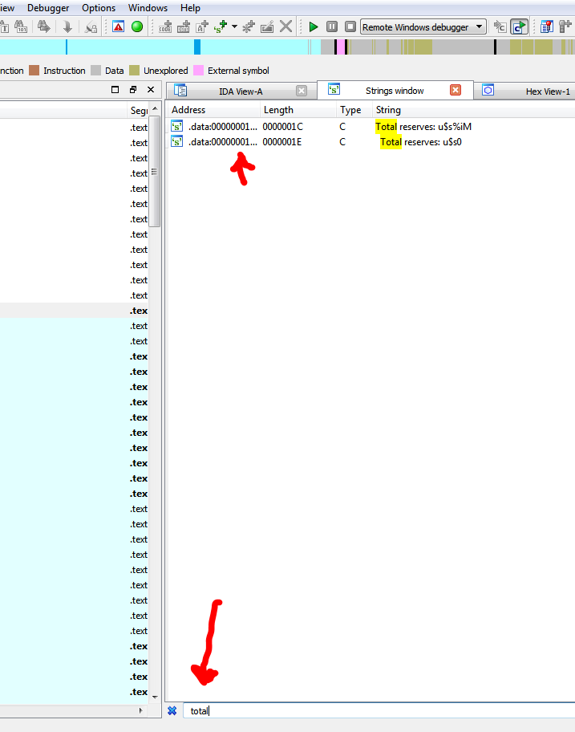
Veamos donde son usadas.
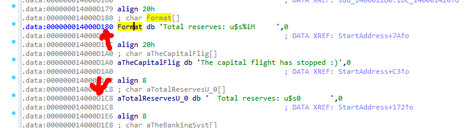
Y apretando X podemos ver las referencias
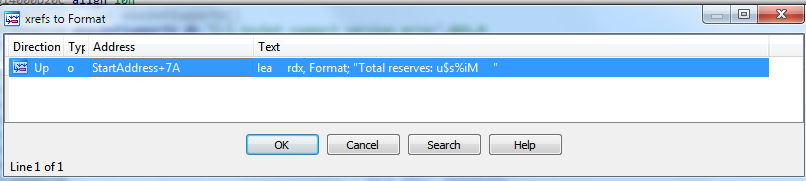
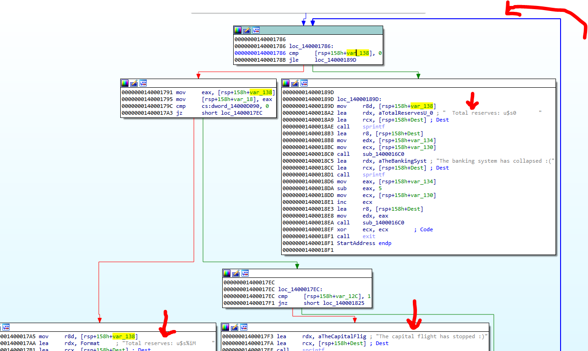
Allí vemos un loop con un contador que cuando llega a cero salta a “Total reserves : u$0” y si es mayor que cero salta a imprimir la cantidad, salvo que vaya a donde está el cartel “The capital flight has stopped 😊”.
Allí vemos el valor decimal 50000 con el que inicializa el contador_guita.
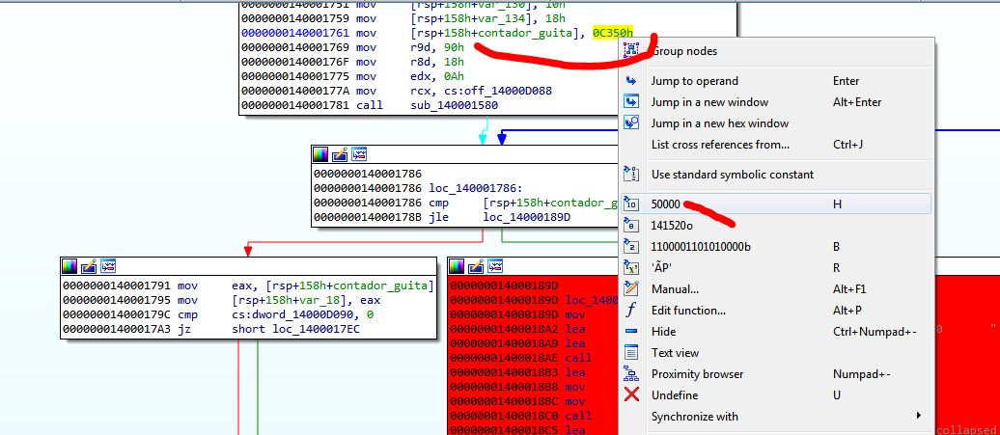
Allí copia la variable contador_guita
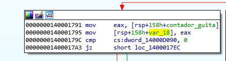
La renombro
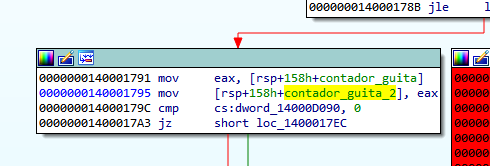
Vemos también que después de los sprintf que arman la string a imprimir en memoria salta a un call que seguro será la que lo imprime en la misma.
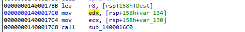
Hay dos variables 130 y 134 que se pasan como argumento y la tercera que se pasa por r8 es un puntero a la string que armo para imprimir.
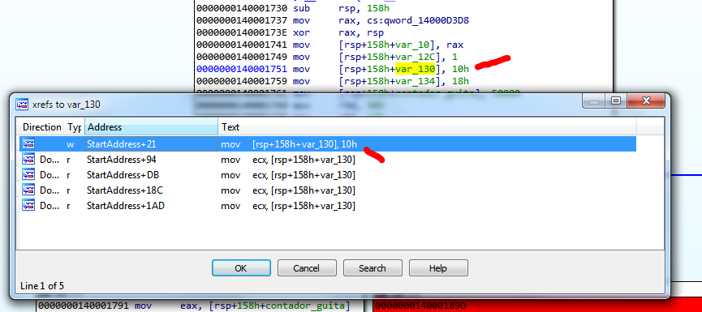
Allí vemos al inicio de la función como inicializa con la constante 0x10 y el resto de los accesos son de lectura, el valor no cambia mas dentro de la función.
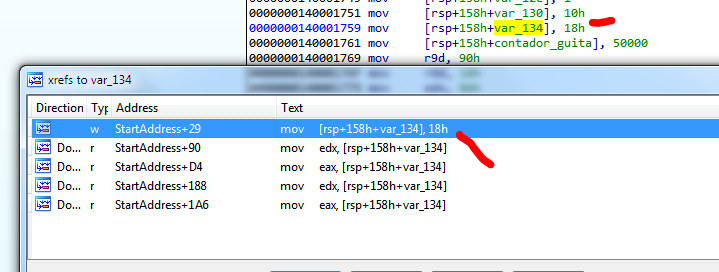
Con la variable 134 pasa lo mismo así que las renombraremos por ahora con const_0x10 y const_0x18.
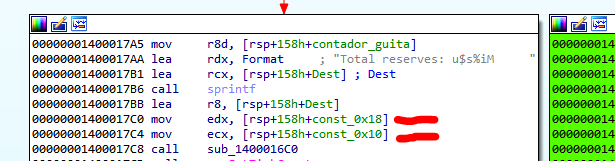
En 64 bits si queremos que se propaguen los nombres de los argumentos en la función padre, debemos setear con Set Type en la dirección de la función.
Con click derecho - Set Type o la Tecla Y podremos definir la función como usercall ya que como fastcall nos deja setear los registros como argumentos de esta.
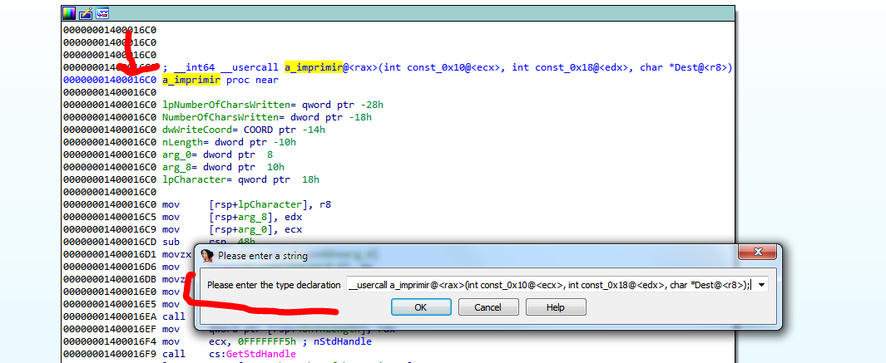
__int64 __usercall a_imprimir@<rax>(int const_0x10@<ecx>, int const_0x18@<edx>, char *Dest@<r8>);
Vemos que cambie el que traía __fastcall por usercall, el tipo de valor de retorno lo dejo igual __int64 le agrego a continuación del nuevo nombre a_imprimir @<eax> que es el registro donde devolverá el valor de retorno, debería ser @<rax> pero ya lo hice y no me influye, ya que no devuelve valores útiles solo imprime, y después los tres argumentos:
int const_0x10@<ecx>
int const_0x18@<edx>
char *Dest@<r8>
Dos enteros y un puntero a la string Dest.
Si todo esta bien en la función padre me deben aparecer visibles los nombres de los argumentos.
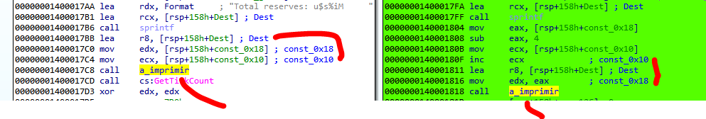
Vemos que en algunas llamadas a la función a_imprimir, le suma a los valores constantes 0x10 y 0x18 antes de llamarla como en el caso del bloque verde que incrementa ECX y le resta 4 a EAX antes de llamar, igual por ahora hasta ver bien que es ese valor no lo vamos a volver a renombrar.
También vemos que antes de reservar el espacio para las variables locales con sub rsp, 48
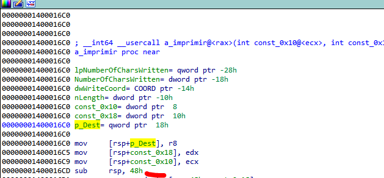
Guarda en el stack los valores de los argumentos en ECX, EDX y R8 en un espacio reservado por la función padre, encima de sus variables locales, reservo 4 qwords de más para pasar argumentos, y como quedan debajo del return address, se comportaran como si se hubieran pasado los argumentos por el stack.
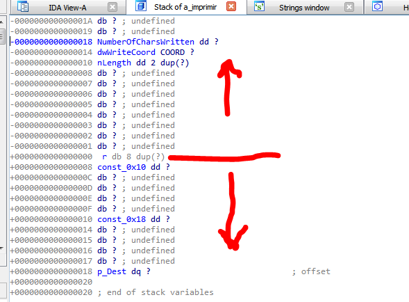
Allí está el return address, hacia abajo quedan los argumentos como siempre y hacia arriba las variables, todo ese espacio debajo del return address donde guardo los argumentos fue reservado por la función padre en su sub rsp, xxx le agrego espacio mas de lo que necesitaba para las variables locales, para esto.
Si agregamos la opción stack pointer
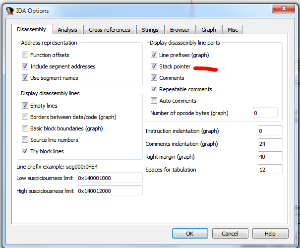
Vemos que el stack no cambia, no hay push ni pops y a la entrada y salida de la función no se ha modificado.
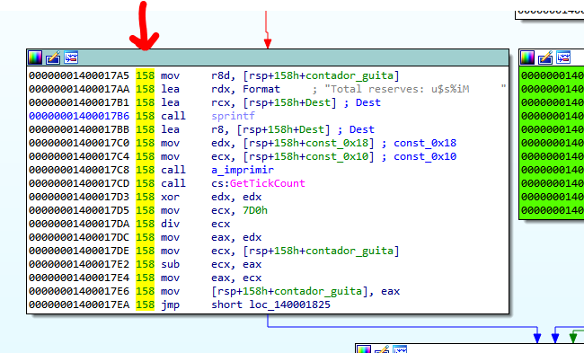
Vemos que estas son funciones relativas a rsp no se guarda rbp en ningún momento y todo es relativo a rsp+xxx en vez de a rbp+xxx.
Vemos que haciendo click derecho en alguno de esos tres argumentos, que está ubicado debajo del return address, allí corroboramos que es rsp+18h. (están debajo del return address)
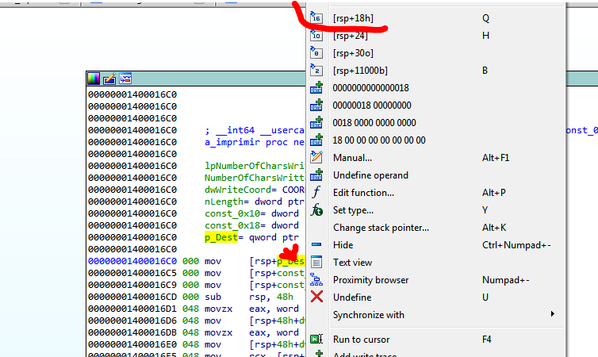
Así que a partir de aquí es como una función conocida los argumentos debajo de r y las variables por encima, no hay rbp guardado porque es relativa a rsp.
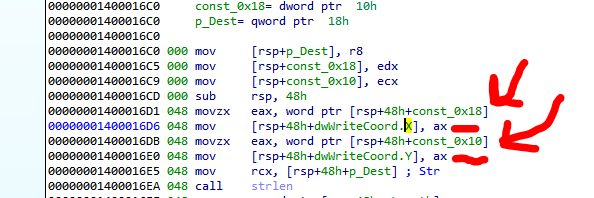
Vemos que los argumentos const_0x10 y 0x18 son parte de una estructura que ida detecto.
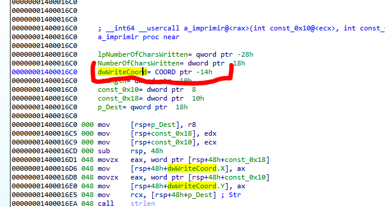
Es del tipo COORD y a la variable de ese tipo la llamo dwWriteCoord.
En la representación estática del stack
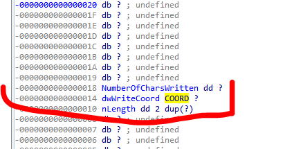
Podemos hacer doble click en COORD, nos lleva a la definición.
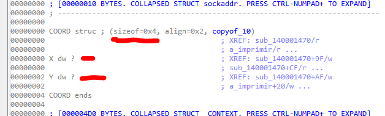
Su tamaño es 4 y tiene dos campos que son WORD X e Y.
Y en LOCAL TYPES también está la definición
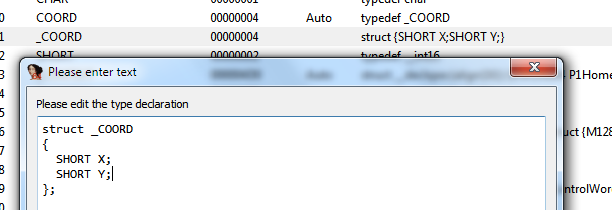
Así que ahora podemos renombrar correctamente los argumentos.
Ahora quedo lindo
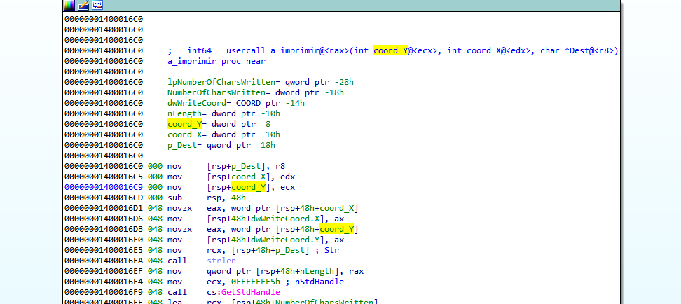
Sabemos que esto no será una parte importante del ejercicio, pero ya que estamos vamos a hacerlo detalladamente.
Después le pasa el puntero a la string a la función strlen para hallar su largo y la guarda en nLength.
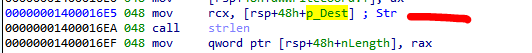
Después llama a GetStdHandle para obtener un handle del device standard que puede ser uno de los tres que están en la lista. (-10, -11 o -12 según si es input, output o error)
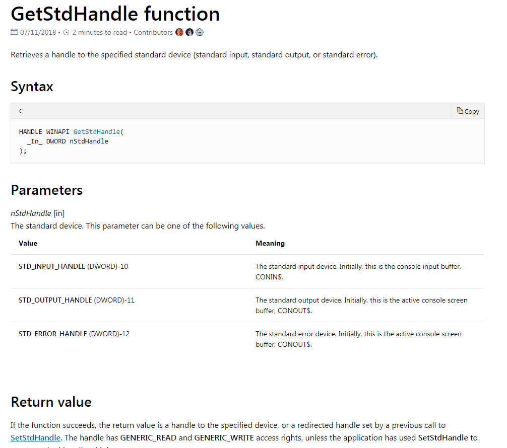
Igual ida con click derecho – USE STANDARD SYMBOLIC CONSTANT la muestra en una lista de posibles, así que la elegimos de allí.
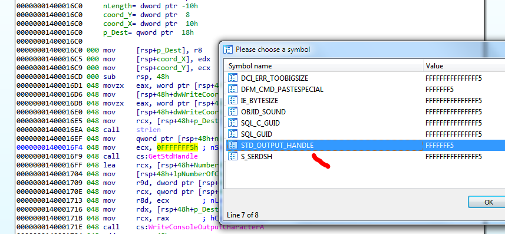
Lo que devuelve en RAX es el handle aquí llamado hConsoleOutput
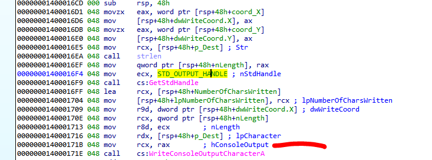
Ese es el primer argumento de la función WriteConsoloOutputCharacter allí lo aclara copia caracteres de un buffer a la salida en la consola.
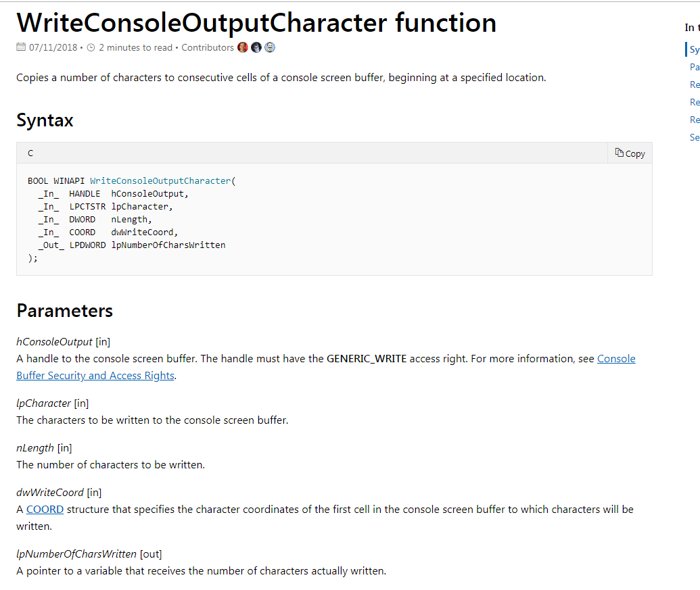
Como habíamos visto el primer argumento se pasa en RCX y es el handle hConsoleOutput.
El segundo en RDX es el puntero al buffer a imprimir
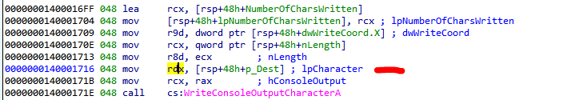
El tercero en r8d es el número de caracteres a imprimir nLength.
El cuarto es la estructura COORD allí muestra que es el campo X, pero como es el primer campo coincide con el inicio de la misma y como lee un DWORD lee los 4 bytes de la misma, o sea ambos campos.
Y el ultimo argumento se pasa por stack ya que es el quinto y es un puntero a una variable que recibirá la cantidad de bytes impresos.
Al salir restaurara el stack que había hecho sub rsp, 0x48 al inicio, ahora lo vuelve a cero con add rsp, 0x48.
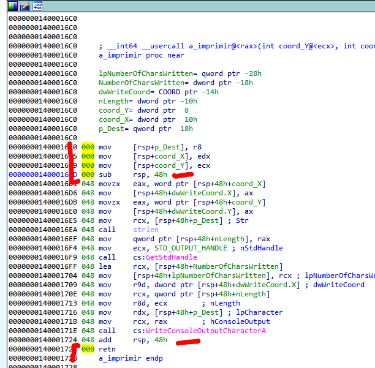
Bueno esta función ya esta terminada, vemos que lo que le suma en algunas llamadas a las variables X e Y de los valores iniciales 0x10 y 0x18 es para escribir en otra posición.
Volviendo a la función principal, vemos que hay una variable global, que si pasamos el mouse por encima, vemos que esta inicializada a 1, si valiera cero, nos llevaría a los bloques verdes, donde no decrementa el valor del contador e imprime “The capital flight has stopped”
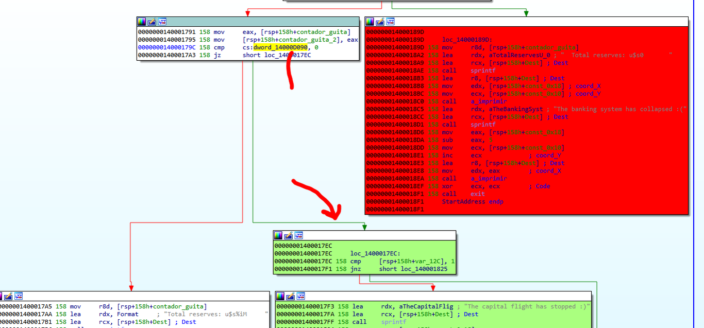
Allí esta el valor 1 que tiene esa variable global inicialmente.
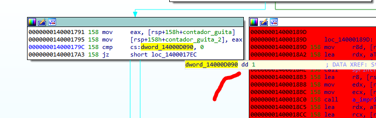
La renombraremos a flag_fuga, ya que si esta 1 o sea si es verdadero, sigue la fuga de capitales y si esta a cero se detiene.
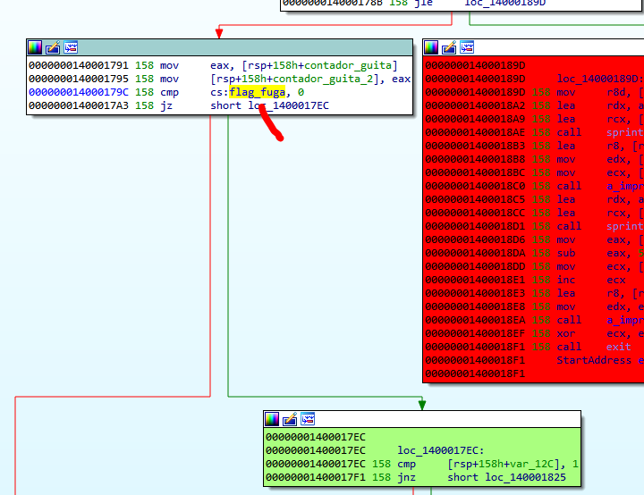
También vemos que, si apretamos X en dicha variable global, no hay ninguna referencia de un lugar LEGAL jeje donde ponerla a cero, el tema es ver cómo hacerlo.
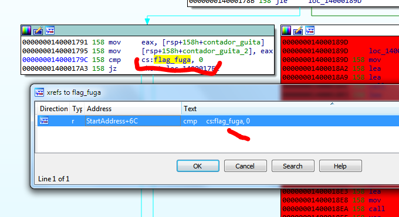
Allí vemos que está en la sección data, lo cual hará que sea escribible ya veremos como haremos.
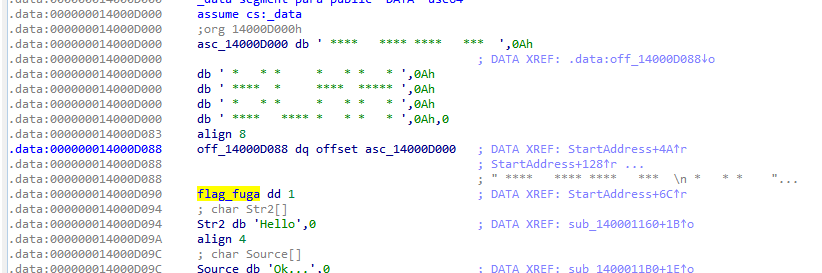
Por ahora sigamos reverseando la función StartAddress, vemos que no usa argumentos, pues lo primero que hace es el sub rsp, 158, recordamos que si tiene argumentos los guarda en el stack antes de hacer la reserva de espacio para las variables.
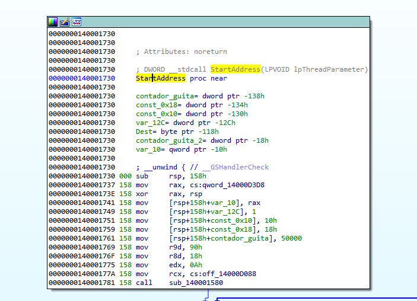
También si apretamos X en el nombre de esta, para ver las referencias.
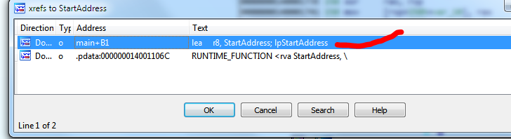
Vemos que es un Thread creado en la función main, terminaremos de analizarla por completo a esta StartAddress y después seguiremos allí.
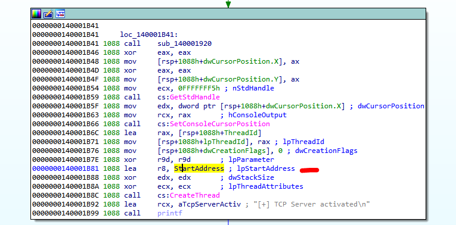
Después hay una variable que como guarda un uno allí, la llamo const_1, también renombre const_0x10 y 0x18 a su nombre coord_X e Y.
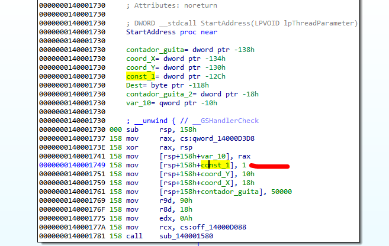
Vemos que esa variable const_1 lo que hace es que una vez que ya se detuvo la fuga de capitales como esto es un loop que seguirá ciclando, se cambie a cero y no repita infinitamente la impresión de “The capital fligth has stopped”
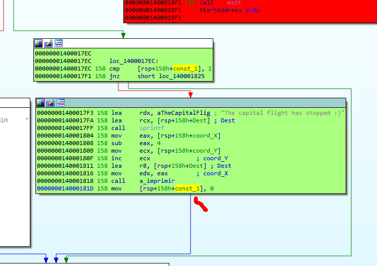
Así que le podemos cambiar el nombre a flag_imprimir_stop.
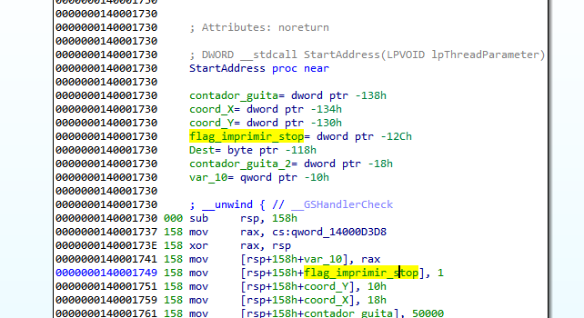
Recordamos los prefijos en IDA
https://www.hex-rays.com/products/ida/support/idadoc/609.shtml
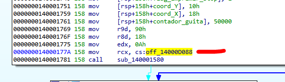
Esos prefijos seguidos de un guion (como off_) y luego una dirección son equivalentes a los corchetes [] y off me dice el tipo de valor que hay dentro de los corchetes.
Seria equivalente a
mov RCX, [0x14000d088]
salvo que nos agrega que el contenido es un offset.
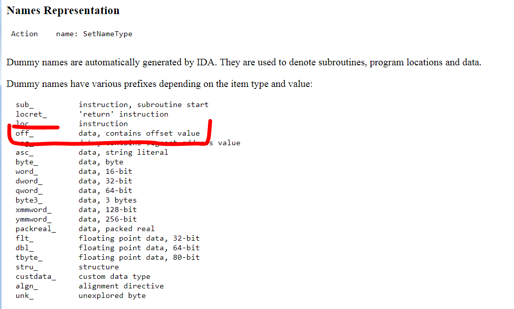
Así que hay que ver el contenido que moverá a RCX.
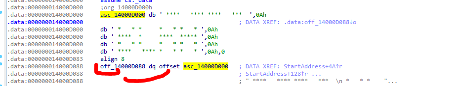
Allí lo vemos, a la dirección 0x14000d088 le agrega el prefijo off_ ya que su contenido es un offset o un puntero en este caso su valor es 0x14000D000 cuyo contenido es una string asc por eso esta dirección tiene el prefijo asc_ delante.
O sea, mas sencillo, tenemos una string y esta otra dirección guarda el offset o la dirección de la misma.
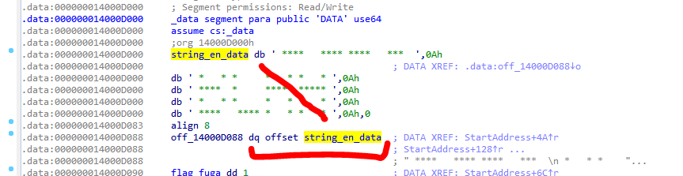
Ahí quedo mas lindo renombre la variable global con la string con los asteriscos como string_en_data y la otra guarda su offset o dirección.
Aquí también antes de reservar el espacio en el stack para las variables, guarda los 4 argumentos debajo del return address.
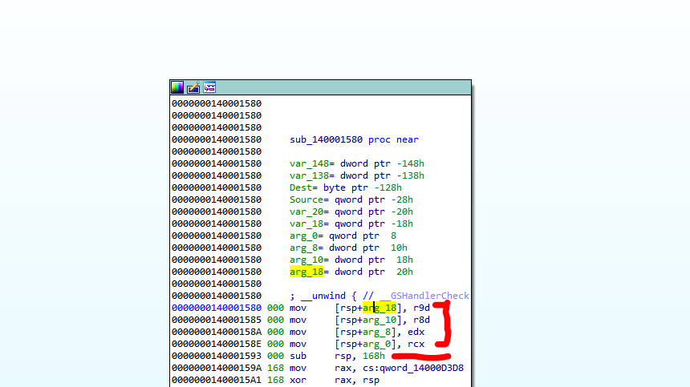
RCX era la dirección de la string_en_data
Los otros tres argumentos son constantes
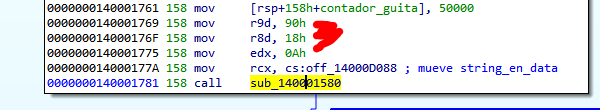
Les pongo esos nombres
Con esto ya puedo seguir reverseando, pero si quiero propagar
__int64 __usercall sub_140001580@<rax>(char *string_en_data@<rcx>, int const_0xA@<edx>, int const_0x18@<r8d>, int const_0x90@<r9d>);
Y me queda en la referencia los nombres.
Renombro la función, aunque aún no sé qué hace, para que sea mas visible cuando se acceda de otro lugar.
Después tenemos la cookie, la lee de la variable global en la sección data la cual renombro.
Y también la variable local como cookie.
Antes de entrar a un loop, copia la dirección de la string_en_data a otra variable e inicializa un contador a cero
Luego llama a strchr buscando el byte 0xA devuelve un puntero a la primera ocurrencia de ese carácter en la string o cero si no lo halla.
Vemos que la string tiene varios 0xA o sea que es una string con varias líneas.
Por lo tanto renombro la variable donde guarda el puntero como p_siguiente_linea y veo que cuando ya no halle más 0xA saldrá del loop.
También vemos que string_en_data siempre apunta al inicio de la string nunca cambia, ya que solo lee luego de inicializarse dicha variable.
Sin embargo string_en_data_2 al inicio vale lo mismo que string_en_data pero, hay un acceso de escritura a dicha variable, así que cambiara su valor.
Vemos que antes de salir de repetir el loop
Lee el puntero a la siguiente línea lo incrementa ya que apuntaba al 0xA para saltear ese caracter y lo guarda en string_en_data_2, así que este ultimo en cada ciclo ira aumentando, guardando el puntero que se incrementa línea a línea.
Así que lo renombrare como p_linea_string_en_data y el otro lo cambio a p_siguiente_0xA ya que siempre estará apuntando a 0xA que busca en strchr.
Así que ya vemos que el ciclo se ira repitiendo línea a línea de la string y como p_linea_string_en_data va apuntando a la siguiente línea siempre, cuando se acaben las líneas y no halla mas 0xA en la string saldrá del loop, ahora veamos que hace en el mismo.
Vemos que hay un llamado a strncpy, el Count o cantidad de bytes a copiar viene de la resta de dos direcciones, la del p_linea_string_en_data y la del próximo 0xA, o sea que copiara una línea ya que el source es el mismo p_linea_string_en_data y el destination es Dest que es un buffer de destino.
Si hacemos click derecho – Array allí en Dest en la representación del stack.
Allí vemos el buffer de destino de 256 bytes de largo.
Otra vez vuelve a calcular el size de la línea restando la dirección del 0xa siguiente con el inicio de la misma y lo mueve a r9d.
,
Vemos que el contador se va incrementando de a uno cada vez que cicla
Pero además el contador se lo suma a lo que lee de const_0xa y luego lo pasa como segundo argumento, así que en EDX estará const_0xA_mas_contador
Allí están los 4 argumentos dentro de la función
Si quisiera propagar con Set Type
__int64 __usercall sub_140001580@<rax>(char * p_Dest@<rcx>, int const_0xA_mas_contador@<edx>, int const_0x18@<r8d>, int nLenght@<r9d>);
Y me queda en la referencia.
Vemos que va a entrar en un loop, inicializa un contador a cero, para diferenciarlo del de la función padre, le pondré contador_loop_actual.
Este lo va incrementando de a uno dentro del loop
Y como empieza en cero y va aumentando de uno en uno la salida es cuando es igual a nLenght o sea el largo de la línea. (JNB si no es mas bajo o sea si es igual o más grande sale)
Dentro del loop toma la dirección de inicio de la línea y le suma el contador o sea toma el primer byte de la string y lo compara con 0x20 para ver si es un espacio.
Recordemos que cada línea esta compuesta por espacios y asteriscos.
En el Hex_Dump puedo ver la string, se ven los 0x20(espacios) y los 0x2a(asteriscos)
Si el carácter es un espacio va al bloque verde sino al otro.
Recordemos que cuando buscaba el 0xa y guardaba el puntero hacia un INC EAX para saltear el 0xa por lo cual si no es espacio, será asterisco, ya que el 0xa del inicio se saltea al aumentar en uno el puntero antes de entrar.
Así que podemos pensar que si no es espacio, es asterisco.
También queda ver que es ese arg_20 ya que hay solo pasa 4 argumentos y la función hija tiene 5, el 5t0 es ese arg_20.
Recordemos que en este compilador, la función padre al hacer sub rsp, 168 hace lugar para las variables propias y además deja espacio para la cantidad de argumentos que necesite pasar por registros a una función hija (4qwords) , la misma luego de recibirlos por registros, los guardara allí en ese espacio reservado.
Si en la función padre defino 4 qwords desde arriba del espacio reservado, para usar como argumentos y la función siguiente lee 5 argumentos, el 5to será la variable local de la funcion padre que está más arriba, en este caso const_0x90_b.
En la imagen siguiente, definí el espacio de mas que creo el padre al hacer su sub, rsp, xxx, encima del que necesita para sus variables locales, como 4 qwords (var_168, var_160,var_158 y var_150)
Por lo tanto es como si le hubiéramos pasado un argumento más, que será la variable de la función padre const_0x90.
También vemos que hay un Array de words llamado Attribute, convirtiéndolo en Array quedara de 0x256 words de largo.
Vemos también que cuando sea espacio, escribirá un cero en el array Attribute, el cual lo va recorriendo con el contador y cuando sea un asterisco escribirá un 0x90.
O sea que por cada línea, escribirá el word 0x00 en los espacios y el word 0x90 en donde había asteriscos en la misma.
Vemos que va a escribir de nuevo en la salida, vuelve a hallar el handle del OUTPUT, le pasa las coordenadas X e Y y como string a imprimir le pasa el puntero a Attribute,
Obviamente esta escribiendo en la salida, si lo corro veo que cada vez que pasa por la función WriteConsoleOutputAttribute cada línea de Attribute, va produciendo el dibujo en azul.
Y va armando la string en colores
Así que puedo renombrar la función como dibujar string ya que es llamada nuevamente más adelante, le pongo un nombre genérico.
Aunque le puedo aclarar que en esta llamada dibuja BCRA
Vemos también que si uno lo deja correr le cambia el color a amarillo
Y más adelante a rojo
Vemos que entre los argumentos de la función WriteConsoleOutputAttribute, los atributos de los caracteres están especificados en otro lugar veamos.
Bueno 0x90 como le pasamos al inicio, es la suma de estos dos
#define BACKGROUND_BLUE 0x0010
#define BACKGROUND_INTENSITY 0x0080
Por eso da azul intenso.
Para obtener amarillo hay que combinar rojo y verde
#define BACKGROUND_GREEN 0x0020
#define BACKGROUND_RED 0x0040
#define BACKGROUND_INTENSITY 0x0080
Allí vemos que llama con todos los mismos argumentos salvo el 0xe0 por el ox90 para cambiarlo a amarillo.
Y el ultimo rojo seria
#define BACKGROUND_RED 0x0040
#define BACKGROUND_INTENSITY 0x0080
Recordemos que contador_guita y contador_guita_2 son iguales al inicio del loop
Pero llama a GetTickCount
Pero lo podemos considerar devuelve un valor que es como si fuera random y que va aumentando, y ese valor lo divide por la constante 0x7d0
Y el resultado lo guarda en EAX el resto en EDX, ese resto se lo resta a contador_guita
Por lo tanto contador_guita en este punto será menor que contador_guita_2
Y cuando contador_guita sea menor que 30000 y contador_guita_2 sea mayor cambiara a amarillo, lo mismo pasara cuando contador_guita sea menor que 10000 mientras que aun contador_guita_2 sea mayor que 10000.
Hasta que contador_guita sea cero y salte al rojo que termina el programa.
Vemos que todo esto lo hace el programa apenas arranca, es un thread del mismo, ahora nos queda ver el main que es el que crea este thread a ver si tenemos posibilidad de influir en algo aquí para detener el contador, porque aquí “legalmente” hemos visto que no podemos.
Bueno comencemos a analizar el main que es donde se crea el thread que vimos anteriormente.
Allí vemos que con el sub rsp, rax, se reservan 0x1088 bytes de espacio en el stack para las variables locales, buffers etc, también renombramos la variable donde guarda la cookie.
Se que podríamos ir a recv y trabajar directamente con los datos que le enviamos pues ya vimos que hay un server escuchando, pero lo haremos despacio y lo más completo posible.
Lo primero que hace en el primer call es llamar a la función WSAStartup.
IDA nos muestra los argumentos, el primero se pasa en ECX y es la versión, aquí se setea a 0x202 y se guarda en dicha variable wVersionRequested, luego se lee a ECX como primer argumento.
El segundo argumento que se pasa por EDX es una estructura del tipo WSAData.
Si vamos a la pestaña estructuras la veremos
También en Local Types
Vemos que al inicio una variable la pone a cero le llamaremos flag_correcto pues si está a 1 es porque todo fue OK.
Se pone a 1 si el campo wVersion que se lleno al llamar a WSAStartup, es igual a la variable wVersionRequested que le pasamos como argumento.
Si son iguales pone la variable flag_correcto en uno, marcando que no hay error y la devuelve en EAX al salir de esta función, como valor de retorno.
Le cambie el nombre a la función a algo mas cercano a lo que hace
Si es 1 el retorno todo esta bien y sigue por acá
El primer argumento en RCX es la dirección de la string “0.0.0.0”
Le pasara en mi maquina 0x13f7ed238 que es la dirección no confundir con el nombre a0000
IDA le coloca a las strings siempre un nombre que empieza con a y luego tiene alguna descripción de la string , por ejemplo significando que apunta “a 0 0 0 0”
Allí esta en las opciones el prefijo a y creara un nombre, igual esta opción no puede ser cambiada y tener efecto inmediato, lo hará en el próximo análisis.
Vemos que puedo usar el nombre de la string que me da IDA por comodidad, y si lo escribo en los comentarios, haciendo doble click en el mismo comentario me lleva a la string, será más cómodo.
Haciendo doble clic allí.
Perfecto sigamos
EDX si lo paso a decimal tendrá el valor 41414 que sería el puerto donde va a escuchar.
netstat -ano en una consola con permiso de administrador nos mostrara los procesos y los puertos en este caso se ve el 41414.
Y el tercer argumento en r8 es un puntero a un qword llamado s
Vemos otra variable que guardara un flag si puede realizar listen con éxito, así que le pondremos flag_listen, también es el valor de retorno ese flag que se devolverá en EAX.
Luego llama a htons para poner el valor del port en big_endian (darlo vuelta en criollo jeje)
También hay una variable name que es del tipo sockaddr.
En estructuras
Y en Local Types
Luego llama a socket
Vemos que en name en el campo sa_family guarda 2, pero después los tres argumentos para socket los pasa directamente como constantes y en af que es address family le pasa 2 directamente. (IPv4)
El tipo es 1 (SOCK_STREAM) que corresponde a TCP.
Y el protocolo será cero (NO ESPECIFICADO)
Y el valor de retorno será el descriptor del socket.(lo que comúnmente llamamos handle del socket)
Después llama a bind con tres argumentos, el largo de name la estructura sockaddr, luego un puntero a la misma estructura name, y el socket s.
Si puso bindearse en ese puerto devuelve cero si no dará un error que puede verse en la tablita que muestra la info.
Si dio cero por ultimo va a listen
Allí vemos la info uno de los argumentos es socket, y el otro un numero llamado backlog que en nuestro caso será cero.
Allí esta el valor cero lo que hace
También si todo es correcto devuelve cero
El socket que estaba en la variable local s lo guarda en el contenido de p_s para usos en las funciones padre de esta.
Le puse de nombre a la función.
Si el retorno es 1 sigue por acá.
Lo primero es una función sin argumentos
Veamos que hace.
Vemos que no tiene argumentos directamente reserva el espacio para las variables con el sub rsp, 0x168 muestra IDA el cambio en el stack como vemos allí.
Vemos un llamado a memset con el argumento 0x20 o sea que llenara de espacios el buffer cuyo largo se ve allí en el argumento size es de 0x100, también en IDA si voy a la vista estática del stack, puedo hacerlo haciendo doble click en Character o cualquier variable.
Veo el espacio vacío de un buffer, si hago click derecho-Array me dice que el largo es 256.
Allí quedo el buffer llamado Character de 256 bytes o 0x100h
Vemos que el loop se repetirá hasta que el contador llegue a 0x50.
Vuelve a pedir el handle del output y llama a WriteConsoleOutputCharacterA,
Si lo corro en este no se ve que escriba nada el buffer con el valor de 0x2020 en cada word, ya que el buffer se inicializo con todos espacios 0x20, igual es solo tema de dibujar en la consola aquí no hay nada interesante, sigamos.
Luego setea la posición del cursor, poniendo a cero los campos X e Y, pasándolos como dword ya que están consecutivos y cada uno es un word.
Luego crea el Thread que ya analizamos con CreateThread, pasándole como dirección de inicio StartAddress, esta es la función ya analizada.
Un vez que se lanza el Thread imprime TCP SERVER ACTIVATED
Y ya empezaría la parte interesante, normalmente uno en un server buscaría el recv y empezaría a reversear desde allí, pero acá la idea es aprender y ser detallado para practicar, así que seguimos.
Mueve el cursor ya que Y ahora vale 1.
Imprime “Waiting for client connections” y llama a accept.
En este caso accept permite la conexión entrante y asigna no ya un descriptor del socket que esta listening como ya teníamos y aquí será el primer argumento, sino que en RAX devolverá otro descriptor que será el handle de la conexión con ese cliente en particular.
Allí están los 3 argumentos un puntero a addrlen en este caso 0x10, un puntero a addr que recibe la dirección de quien se conecta, y el ultimo el socket s, devolverá en RAX el handle a esta conexión que se ha realizado.
Vemos que si corro el server y pongo un BREAKPOINT al volver de accept, no parara, salvo que le envie un paquete correcto al puerto correcto, como en este caso, allí le envie un paquete y paro.
Luego llama a otra función parecida que dibuja algo en la consola
Es muy similar no la voy a analizar de nuevo.
Allí imprime NEW CONECTION ACCEPTED y va al recv donde comienza lo bueno ya que al recibir datos que le puedo enviar, si el programa tiene alguna vulnerabilidad podre afectarlo.
Vemos que el largo de lo que puede recibir será 0x1000 como máximo, los flags serán cero, se guardara lo que yo le envie en el buffer llamado buf, y el primer argumento en RCX será el handle_conexion.
Si todo fue bien el valor devuelto será la cantidad de bytes recibidos
Veamos el largo del buffer donde recibirá la data
Así que está bien no desbordara.
Vemos que la variable addrlen que en el accept la usaba para el largo de addr ahora la esta reusando para recibir la cantidad de bytes recibidos.
Normalmente cuando una variable es reusada, le pongo el nuevo nombre después de varios guiones bajos, para hacer ver que tiene dos usos diferentes.
Después de imprimir la cantidad de bytes recibidos, llega a una función veamos que hace.
Tiene dos argumentos en ECX el primero es la cantidad de bytes recibidos y el segundo en RDX es un puntero al buffer donde guardo la data que le envie.
Vemos que localmente le pongo el nombre del significado actual de la variable reusada para no confundir.
El que quiere propagar con Set Type.
__int64 __usercall funcion_2@<rax>(int cantidad_bytes_recibidos@<rcx>, char * p_buf@<edx>);
Alli se propagaron.
Vemos que compara strncmp los primeros 6 bytes de la data que le envie contra la string “Hello”
Si devuelve cero son iguales y el flag es puesto a 1.
Ya que el salir de esta función si devuelve 1 va a handshake accepted, renombrare la función como check_handshake.
Bueno como vimos si le pasamos “Hello” será válido el handshake.
Luego devuelve en un send una string que comienza con “Hi y varios espacios” de largo 8, no confundir con el otro buf este está en la sección data, lo voy a renombrar para evitar problemas.
Ahora quedo mejor, el largo de la data que me envía será 8 no hay problema aquí.
Ahí guarda los bytes enviados, luego imprime “Waiting for request” hay un llamado a una función y luego ya se cierra la conexión con el cliente y va nuevamente a accept a esperar otra, así que todo se tiene que cocinar en esta ultima función que esta antes del CloseSocket.
Vemos que tiene un solo argumento que es el handle_conexion.
Después de guardar el argumento ya reserva el espacio para las variables
El que lo quiere propagar
__int64 __usercall funcion_2@<rax>(__int64 handle_conexion@<rcx>);
Luego llama a otro recv con el mismo handle_conexion pero 0x10 de largo, veamos el buffer donde recibe.
Como el buffer es de 0x10 o sea 16 bytes, abarcara la variable buf y las tres variables 224, 220 y 21c.
Si quiero puedo crear una estructura para ese buffer
Ahí quedo de 16 bytes de largo con 4 dwords, luego veré que nombre especifico ponerle a cada uno.
Y la variable la renombre como my_buf
Allí guarda la cantidad de bytes recibidos que puede ser como máximo 0x10 o sea 16.
Compara la cantidad de bytes recibidos con 0x10 y debe ser justo ese valor, ya que si no es más bajo, será igual o mayor y mayor no puede ser porque recv tenía 0x10 como máximo, así que solo acepta 0x10 sí o sí.
Vemos que va a hacer otro recv con el mismo handle_conexion, pero en este caso el size es el campo_0 de lo que le envie en el anterior paquete de 16 bytes, y guardara el resultado en var_218 que será el buffer para este recv.
Vemos que ese buffer es de 512 bytes y podría enviarle mas data ya que el size del recv lo manejo yo a través del campo_0, el problema es que pisa la cookie y eso hará que se cierre el programa, tampoco en 64 bits hay manejador de excepciones en el stack, así que no nos servirá desbordar por ahora. (pero o tenemos en cuenta para mas adelante)
Igual lo renombre a buf_512_tercer_recv
Y allí renombro el campo_0 también veo que lo reusara para guardar los bytes recibidos.
Y bueno quedo largo pero yo me entiendo jeje, con las variables reusadas pasa esto.
Luego hay una comparación signed, solo sigue si el campo_3 es menor que cero.
Lo renombro para acordarme.
Luego una comparación unsigned solo sigue si campo_2 es menor o igual que 0x200.
Lo renombro.
También los carteles de error me dan idea de el nombre de los campos, el campo_3 será offset y el campo_2 será level.
Ahora quedo mejor
El campo 1 es operation compara con 0x11111111 o 0x22222222 y si no es ninguno de los dos va a Invalid Operation, así que renombramos.
Vemos la estructura del segundo paquete.
Vemos que hay dos operaciones diferentes y un send, deberemos estudiar ambas operaciones para ver cual nos sirve y porque.
En este compilador se reservan 4 qwords encima del espacio de las variables, para que la función hija guarde allí los argumentos que se pasan por registro.
Así que como la función hija tiene 5 argumentos, el 5to será var_248.
La renombro como const_0 ya que escribe allí un cero
Analicemos primero la operación 0x22222222
Los otros 4 argumentos son.
__int64 __usercall op_0x22222222@<rax>(int level_menor_o_igual_que_0x200 @<ecx>, char * p_buf_512_tercer_recv@<rdx>, int bytes_recibidos_3er_recv@<r8d>, int offset_valor_negativo@<r9d>);
Allí se propagaron los argumentos
La cuestión es que es una función recursiva, igual en cada recursión.
Vemos que cuando la función se repite los argumentos son los mismos, solo se va decrementando level, que habíamos visto que no puede ser mayor o igual que 0x200, así que si le paso 0x200 se repetirá lo mismo 0x200 veces, decrementándose level en cada una.
O sea que la función se seguirá repitiendo solo decrementando level y no hará ninguna otra cosa.
Inclusive el quinto argumento cada vez que se repite, es puesto a cero en cada repetición, así que no cambiara tampoco.
La cuestión que ira repitiéndose sin hacer nada hasta que level se vaya decrementando y llegue a cero.
En ese caso, ira a este bloque donde pisara con un OK alguna parte del stack arriba del buffer_512_tercer_recv ya que al puntero al mismo le suma el offset negativo que le pase.
Vemos que OK es una string de 2 bytes y el cero final.
Vemos que arriba del buffer esta la variable const_0 en el padre
La cuestión es que después que llegue level a cero y haga el strcpy, luego saldrá de la función e ira retornando aquí.
E ira recorriendo los return de cada level, en sentido contrario, saliendo de cada función por la misma dirección.
La cuestión que siempre será const_0=0 y no ira al strncat, el cual será salteado, hasta el level 0x1ff, el cual fue la primera ejecución y que allí tiene el const_0 del padre que lo pisamos con OK, así que allí solamente una vez ira al strncat.
Aquí level valdrá 0x200 ya que es el level máximo y será el count del strncat, por lo cual debería tratar de enviar el valor más grande posible, en este caso 0x200 para que concatene mucha data.
El Source es el puntero al paquete que le envie en el tercer recv y eso se copiara a continuación de la string OK, así que podre pisar variables del stack que están debajo del const_0, inclusive una muy preciada como es el size del send que al salir envía la respuesta.
Si yo piso ese size con un valor más grande del que tenía, podre recibir leaks del stack incluso la cookie, y el return address lo cual como el ejecutable tiene ASLR, me permitirá en un próximo paquete, enviar una largo que ahora si pise el return address como ya conozco la cookie, no habría teóricamente problemas para explotarlo por allí, por supuesto armando el rop correspondiente.
Antes de ponernos a hacer el script me queda estudiar la otra función op_0x11111111 a ver qué pasaría si elijo esa en vez de la op_0x22222222.
Allí coloque los argumentos y si quiero propagarla
__int64 __usercall op_0x11111111@<rax>(int level_menor_o_igual_que_0x200 @<ecx>, char * p_buf_512_tercer_recv@<rdx>, int bytes_recibidos_3er_recv@<r8d>, int offset_valor_negativo@<r9d>);
Allí están los valores propagados
Vemos que al igual que en la op_0x22222222 va a repetir a la misma función solo cambiando el level que se va decrementando, mientras tanto se repetirá hasta 0x200 veces según el level que hayamos puesto, y como va a ir disminuyendo el mismo va a llegar a cero, cuando lo haga ira a un strcpy.
Acá llega al strcpy con level=0.
En esta caso no le suma al Destino el offset negativo, por lo cual solo escribirá OK en el inicio del buffer del tercer paquete.
Es de notar también que la string OK no es la misma de la función 0x22222222 esta es de cinco caracteres de largo, tiene tres puntitos luego del “OK…”.
Allí están ambas strings.
Lego al volver del return address de cada repetición, va al strncat
El Destination será el buffer del tercer_recv donde al inicio estará el “OK…” que copio en el strcpy, pero a continuación de donde termina esa string se le apendeara lo que apuntemos desde el Source que será el mismo puntero mas el offset negativo, o sea que podemos apendear datos de arriba del buffer y pegarlos al final.
Este strncat se repetirá cada vez que retorne de una repetición, así que se repetirá y continuara añadiendo debajo más datos desde arriba del inicio del buffer, con lo cual se puede producir un overflow.(siempre y cuando sean strings y no haya ceros sino copiara hasta el cero)
También podría leakear ya que la string que habrá en Dest en el buffer será chica (por la string “OK…” que copio allí solo tendrá 5 bytes y termina en cero, eso hará que a partir de allí se apendee lo que esta arriba del buffer, por ejemplo return address de las repeticiones, aunque no la cookie, pues no estará arriba del buffer.
También recordamos que en el caso de la op_0x22222222 solo una vez llegaría a strncat, en el caso de la op_0x11111111 hay que recordar que cuando va decreciendo y llega al level 0, allí ira al strcpy y desde ahí como no depende de ninguna const_0 en todos salidas de todos los levels ira al strncat.
Además como la cantidad que copia Count, es el valor del level actual y este se va decrementando, copiara en la de level 1, solo 1 byte, en la siguiente cuando salga a la del level2_copiara 2 bytes y así hasta la última que copiara 0x1ff y saldrá luego al padre.
Obviamente copiara esa cantidad de bytes si no hay ceros porque copia strings si el level es 0x150 y hay un cero, copiara solo desde Source hasta el cero, no el size completo.
Bueno así que hay muchas posibilidades, podemos leakear en una primera etapa y obtener la cookie y direcciones del ejecutable que nos permitirán en un segundo paquete overflodear hacer rop y escribir el flag para evitar la fuga y ejecutar la calc.
Todo eso lo veremos en la parte_2 del tutorial les dejo el análisis solo en la parte 1 para que lo sigan y se animen a ver si pueden armar el script con la solución y también piensen si hay mas soluciones posibles ya que las posibilidades son grandes.
Hasta la parte 2
Ricardo Narvaja